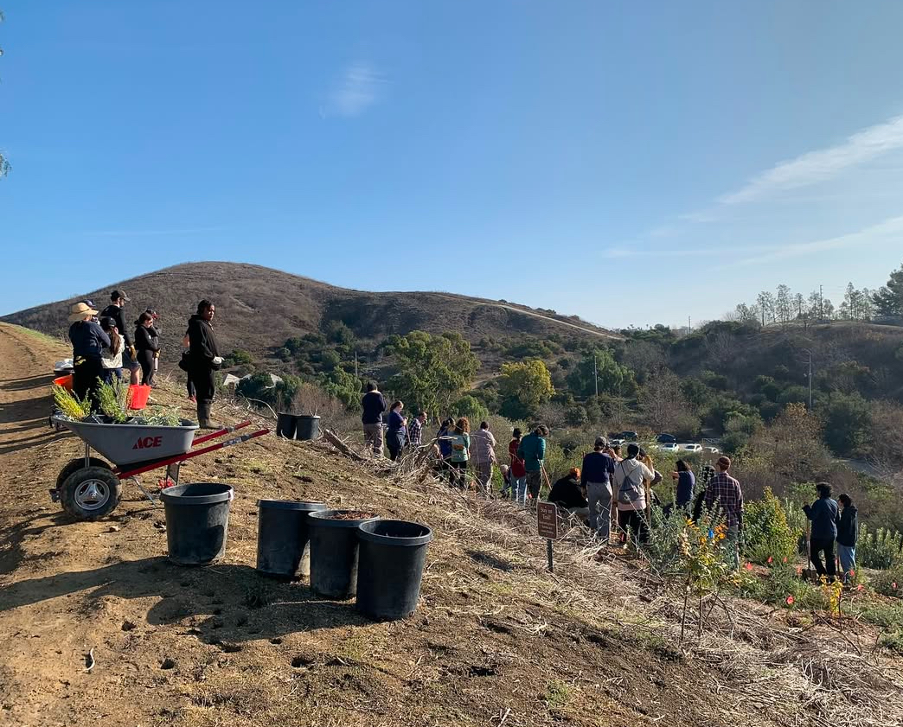
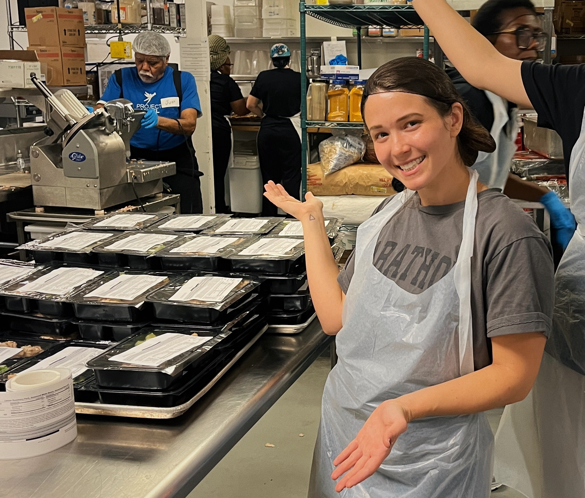
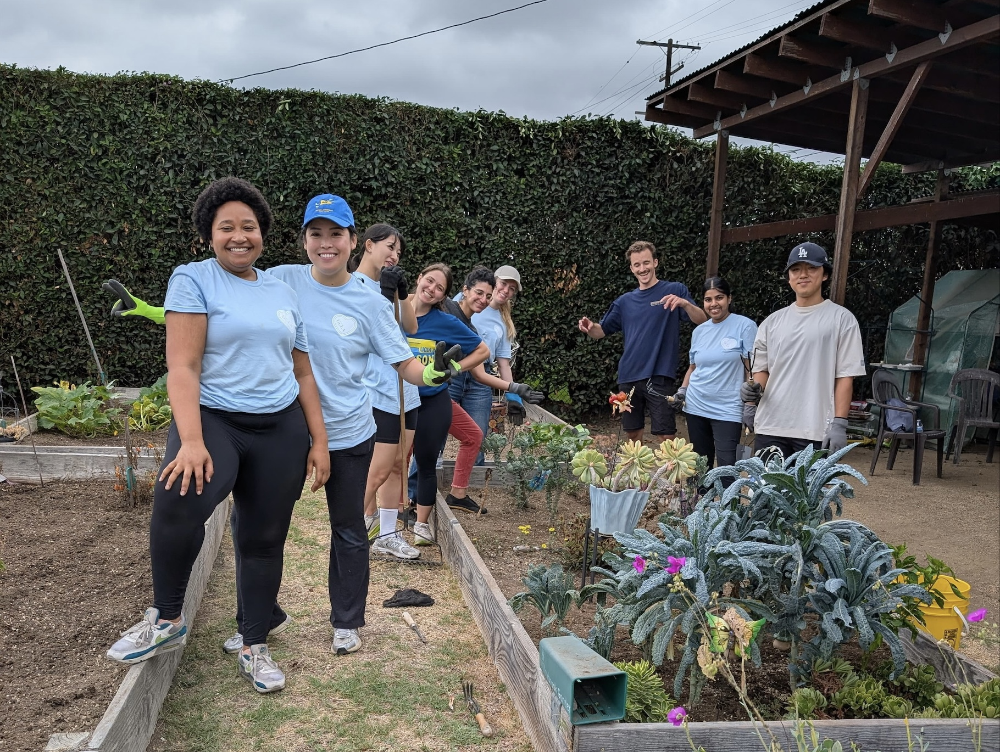

2025 was a year of transition for me — starting my MBA at UCLA Anderson, stepping into new leadership roles, and preparing for my next chapter in tech and product. But alongside all of that, one thread grounded me more than anything else: community.
Protecting the Places That Protect Us
Early this year, I volunteered with the Santa Monica Mountains Fund, helping replant native habitat and support wildlife conservation efforts after years of wildfires and drought.
There's something deeply humbling about restoration work. You don't see results immediately. You dig, plant, water, and trust that time will do the rest. It's slow, physical, and unglamorous — and exactly the kind of work our climate needs more of.
Spending a morning with dirt under my nails and the mountains in the distance was a powerful reminder that environmental resilience isn't abstract. It's built one plant, one trail, one volunteer day at a time.

Supporting Neighbors Through Project Angel Food
In Los Angeles, food insecurity and serious illness often intersect in heartbreaking ways. Through Project Angel Food, I helped prepare and deliver medically tailored meals to people who are homebound and living with critical illnesses.
Volunteering there is quietly transformative. You're not just cooking meals — you're contributing to dignity, stability, and health for people who are navigating incredibly hard seasons of life.
It also reshaped how I think about "healthcare." It's not only hospitals and prescriptions. It's nutrition, reliability, and knowing that someone thought about you today.

Helping Californians Participate in Democracy
This year, I also volunteered on voter engagement efforts to help California voters make a plan to participate in elections — answering questions, sharing resources, and helping people navigate the logistics of voting.
In an era where civic participation can feel fragile or frustrating, these small interactions matter. Sometimes all it takes is clarity and encouragement for someone to feel empowered to take part.
Democracy isn't just something that happens every few years. It's something we maintain, person by person.
Growing Community Through Local Gardens
I spent time supporting local community gardens, helping with planting, maintenance, and distribution. Community gardens sit at a beautiful intersection of food access, environmental stewardship, and human connection.
They turn empty lots into gathering places. They turn neighbors into collaborators. And they remind us that communities thrive when people have both roots and reasons to come together.

Expanding Access to Education
One of the most meaningful responsibilities I hold is serving on the board of the Marge Gould and Kim Clark Memorial Scholarship Foundation.
Our goal is simple and ambitious: help students access education who might otherwise be unable to afford it. That work involves reviewing applications, raising funds, and making careful decisions about how to support students not just financially, but holistically.
Education has shaped my life in ways I could never fully measure — from USC to UCLA Anderson — and being able to help open that door for others is an honor I don't take lightly.
Funding Research, Honoring Memory
I also continued raising funds for rare cancer research at Memorial Sloan Kettering Cancer Center, in memory of my mom and others whose lives were cut short by these diseases.
This work is personal. It always will be. Some causes you choose, and others choose you.
Channeling grief into funding research doesn't erase loss, but it gives it direction. It turns memory into momentum.
And it keeps hope alive for families who are still waiting for better treatments and better outcomes.
What This Year Taught Me
Across all of these experiences, one theme stood out: collective action compounds.
None of this work happens alone. It happens with friends who show up early on weekends, classmates who volunteer between midterms, colleagues who donate or share resources, and strangers who become teammates for a few meaningful hours.
Giving back became one of the most joyful parts of my year not because it was easy, but because it was shared. As I move into 2026 — balancing my MBA, my new Chief of Staff role, and long-term goals in tech and impact investing — I'm carrying this lesson with me: progress is built in small, consistent acts of care.